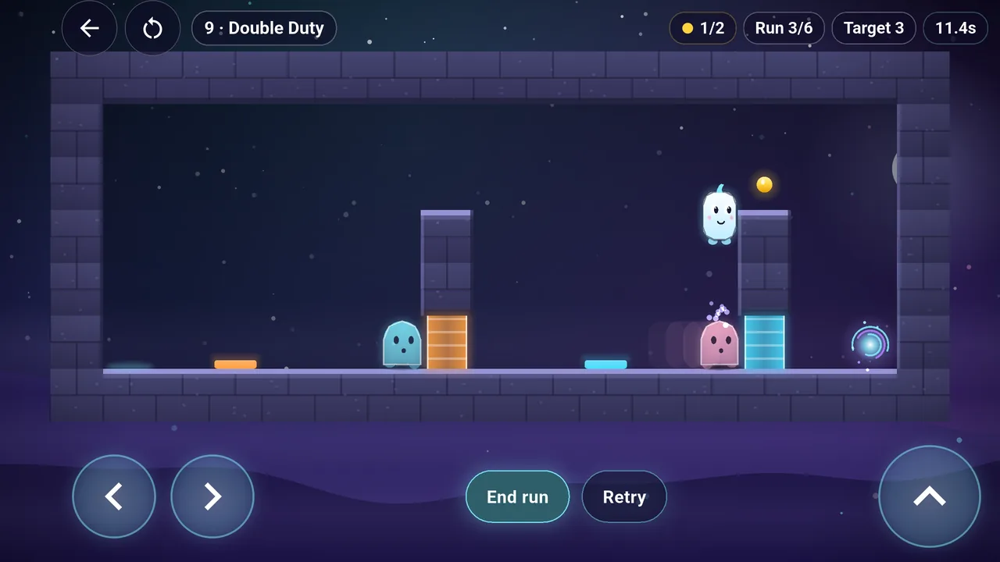
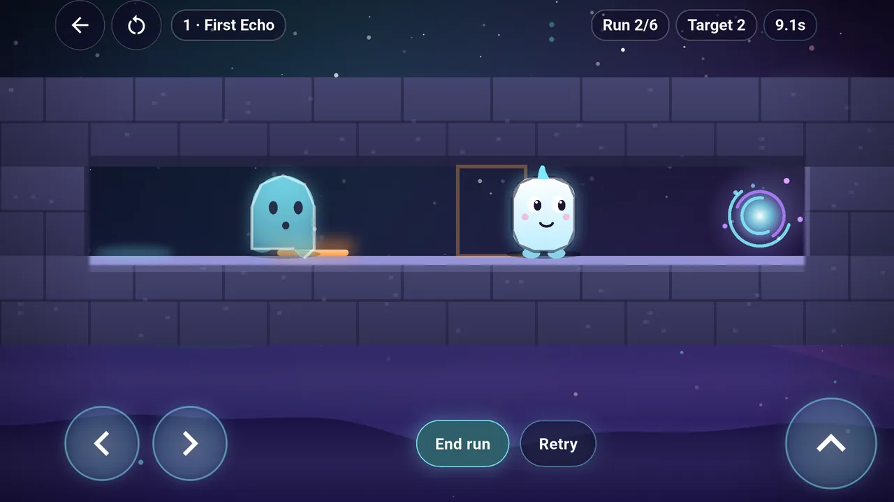
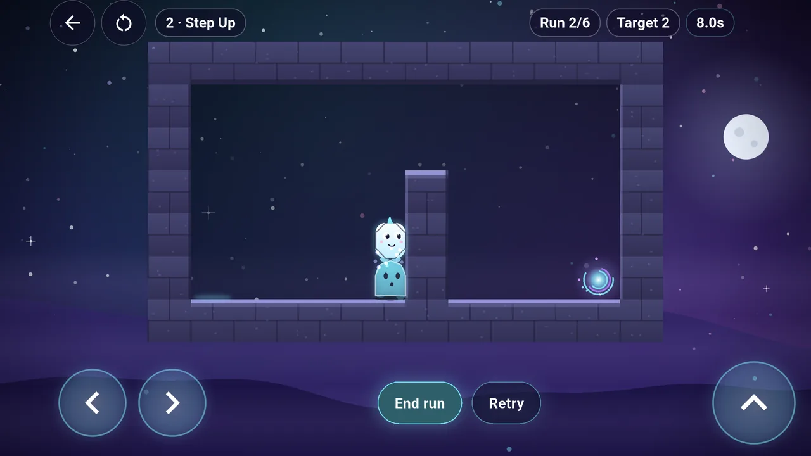
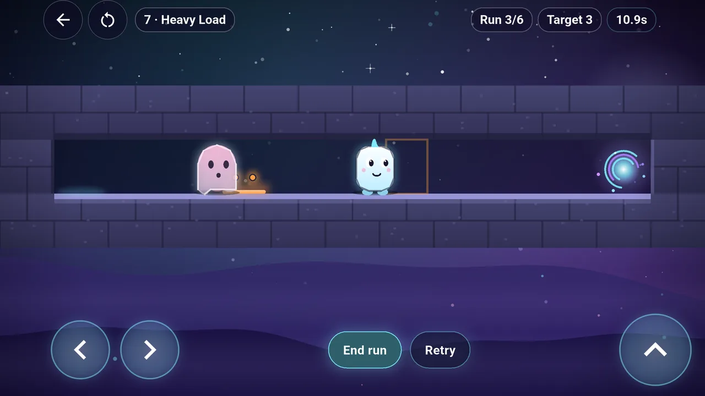
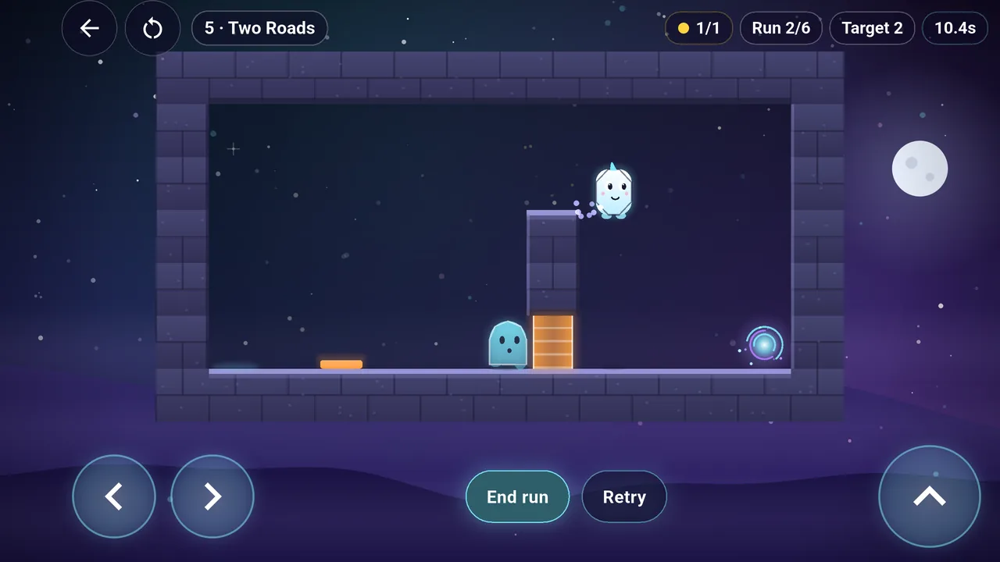
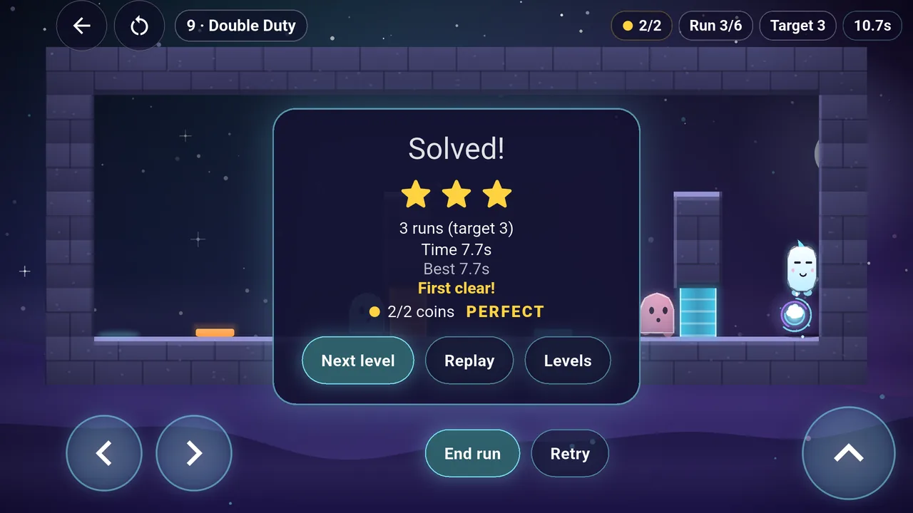
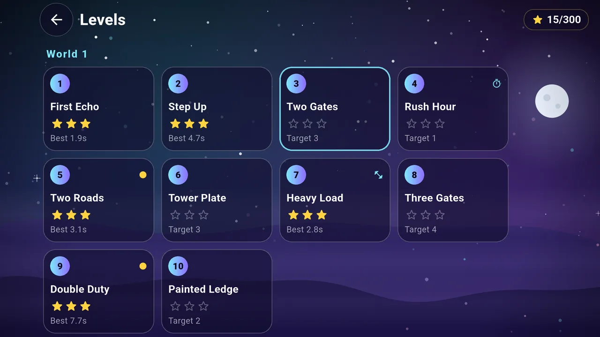
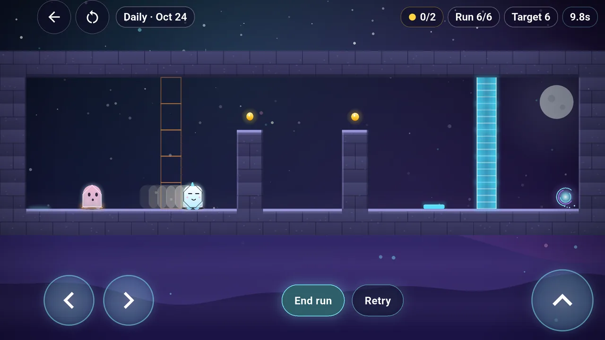

Againlings
Team up with yourself.
A friendly ghost platformer by Balaji Sivakumar, an independent developer in Canada publishing as Zeet Apps.
Your past runs become your helpers
Run, jump and reach the exit. Every run you finish turns into a ghost that repeats exactly what you did while you play the next one. Stand on a plate to hold a door, climb onto a ghost to clear a wall, or time two runs so they meet in the middle. The fewer runs you need, the more stars you earn.
- 100 levels in 10 worlds; finish enough levels and stars in a world to open the next
- A new Daily level every day, the same for every player
- Plates, doors, heavy plates, timed doors, tall walls and coins
- Three stars per level for finishing in the target number of runs
- A How to play page inside the game; no account or sign-up
A look inside Againlings
Real screens from the game: ghosts holding plates, a heavy plate, a wall climbed on a ghost, the level list and the Daily level.








Your progress stays on your device
Finished levels, stars and best times are stored locally. There is no account and no Againlings server. Uninstalling the game removes them.
Free with advertising
Againlings is free with Google AdMob ads shown between levels, never during play. Where the law requires it, the game asks for your consent before requesting an ad, and on iOS it asks for App Tracking Transparency permission. Google AdMob's SDK can automatically collect and share IP addresses (including approximate location), device and app identifiers where available, app and ad interactions, advertising data, and crash, diagnostic and performance information for advertising, analytics and fraud prevention. Declining tracking does not stop all SDK collection. Read the privacy policy for details. No purchase is required to play.
Support
Questions, feedback or a problem? Email zeetforfun@gmail.com. Include Againlings, your device model, operating system and app version, plus the steps that led to the issue.